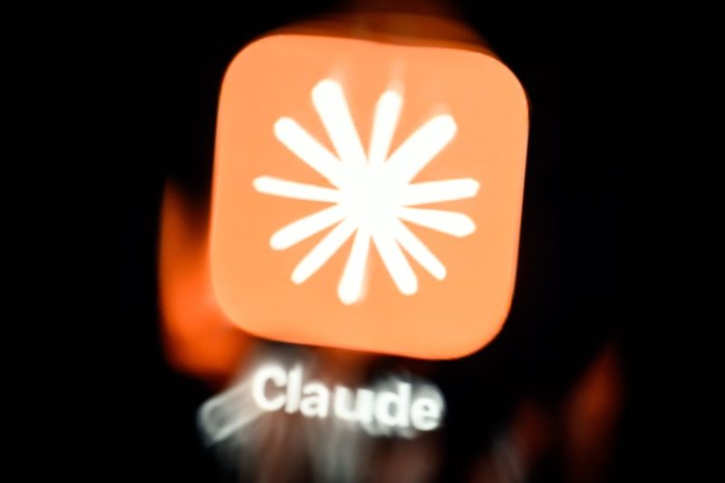
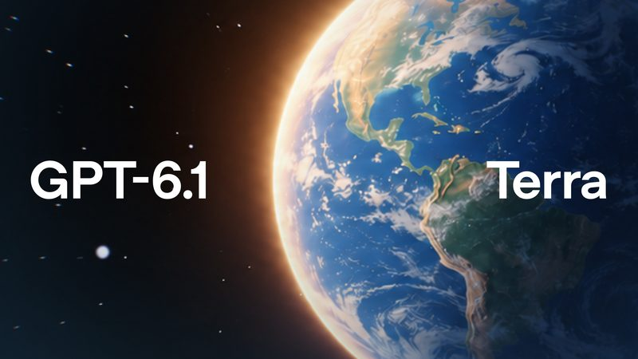
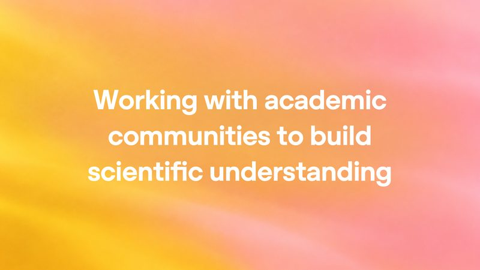
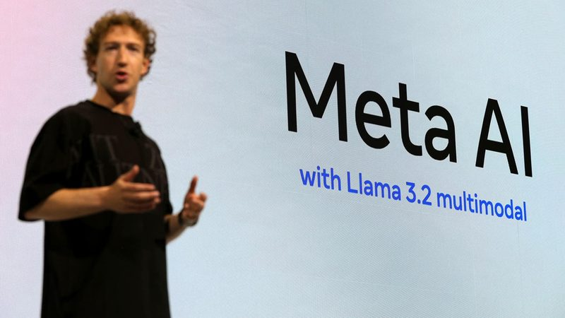
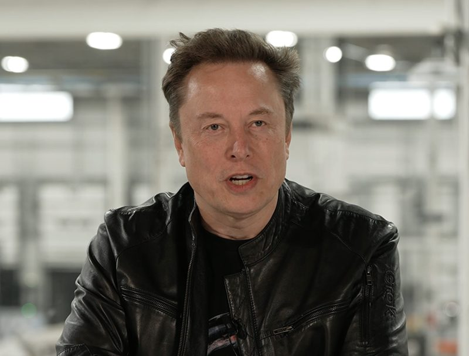
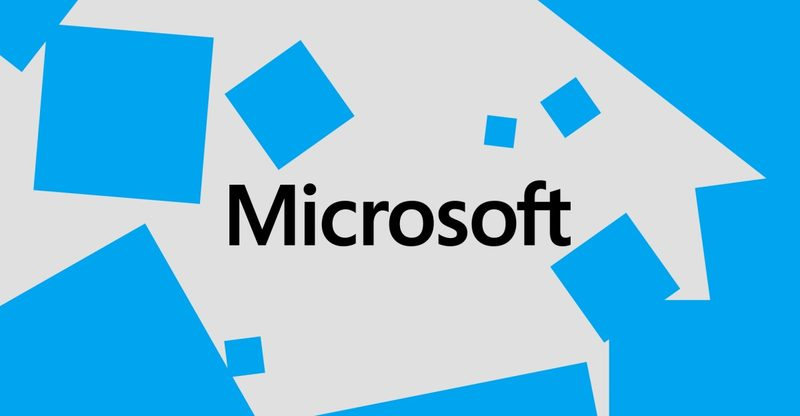

今日頭條
Anthropic 正式申請上市 PLUS：OpenAI 推出半價的 GPT-6.1 Terra
Anthropic 公開上市文件，首度攤開營收和虧損；OpenAI 推出更便宜、會操作電腦的新模型，還宣稱 AI 證明了數學和電腦科學難題。Meta、SpaceX 則各自籌措數百億美元買 AI 算力。
📋 今天 7 則 Anthropic 正式申請上市，上半年營收 163 億美元 OpenAI 推出 GPT-6.1 Terra：會操作電腦，API 價格砍半 OpenAI 宣稱 AI 解開數學、電腦科學和物理三道難題 二手精品網站 The RealReal 擋下 AI 購物代理 Meta 計畫募資最高 950 億美元，投入 AI SpaceX 和 Apollo 簽下約 400 億美元 GPU 租賃融資 微軟對最多 6 萬名員工提出自願離職方案 
圖：TechCrunch / Getty Images 新聞 #1 Anthropic 正式申請上市，上半年營收 163 億美元 Claude 的開發商 Anthropic 10 月 26 日向美國證管會（SEC）遞交上市文件，股票代號預定為「ANT」。文件顯示 2026 上半年營收 163 億美元，去年同期只有 12 億美元；營業虧損 6.93 億美元，比去年同期的 21 億美元縮小。年付 10 萬美元以上的企業客戶超過 11,900 家。
💡 跟你有什麼關係： 這是近年最受關注的科技股上市案之一。之後若掛牌，一般投資人就能直接買到大型 AI 公司的股票，也會更清楚看到 AI 公司到底賺不賺錢。
⚠️ 淨虧損高達 807 億美元，主要是可轉債的非現金會計調整；公司自己也寫明「可能無法達成或維持獲利」。七位共同創辦人將握有 50.1% 投票權，外部股東影響力有限。募資金額和股價尚未公布。
📰 原始來源：TechCrunch（2026-10-26） ↗ 
圖：OpenAI 新上線 #2 OpenAI 推出 GPT-6.1 Terra：會操作電腦，API 價格砍半 OpenAI 10 月 26 日推出 GPT-6.1 Terra，主打看懂畫面、點選 App、填表格等電腦操作工作。API 價格為每百萬輸入 tokens 1 美元、輸出 5 美元，比 GPT-5.6 Terra 便宜一半。官方表示，在容易誘發錯誤的內部測驗中，低推理設定的錯誤率從 53.6% 降到 16.7%。
💡 跟你有什麼關係： ChatGPT Work 和 Codex 的 Plus、Pro 等付費用戶即日起可用；同樣的用量額度能做更多事。像是把收到的發票資料自動輸入記帳軟體這類重複工作，會變得更便宜。
⚠️ 效能和價格比較都是 OpenAI 自己的測試數字，尚待第三方驗證；官方也說最複雜的寫程式任務仍建議用更高階的模型。
📰 原始來源：OpenAI（2026-10-26） ↗ 
圖：OpenAI 研究 #3 OpenAI 宣稱 AI 解開數學、電腦科學和物理三道難題 OpenAI 10 月 26 日公布三項由內部模型產生的成果：證明 1991 年提出的「局部平滑猜想」在所有維度成立、推翻電腦科學的「指數時間假說（ETH）」，以及量子色動力學（QCD）的嚴格存在性證明。數學和電腦科學的證明已用 Lean 定理證明軟體檢查並公開在 GitHub。OpenAI 請外部學者（包括諾貝爾物理獎得主 David Gross）組成小組驗證，並表示不爭取學術功勞。
💡 跟你有什麼關係： 如果成立，代表 AI 開始在頂尖研究上產生新發現，未來可能加快演算法和基礎科學的進展。對一般人來說，短期內不會直接影響生活，但值得留意 AI 研究能力的變化。
⚠️ 目前仍待學界獨立驗證；物理成果的材料還沒公開。學者曾指出，Lean 只檢查形式化後的命題，未必等於文字敘述的結論，OpenAI 先前的 Navier–Stokes 證明就被指出翻譯有出入。
📰 原始來源：OpenAI（2026-10-26） ↗ 圖：The Verge / Cath Virginia, Getty Images 新聞 #4 二手精品網站 The RealReal 擋下 AI 購物代理 The Verge 先前發現，可以叫 Meta 的 AI 代理 Muse 在 The RealReal 不斷把商品加回購物車，利用「加入購物車保留 20 分鐘」的規則讓其他人好幾小時都買不到。The RealReal 技術長 10 月 26 日表示已更新防機器人系統，現在 AI 代理很難登入、加購物車和結帳，但仍可以搜尋商品並把用戶導到商品頁。
💡 跟你有什麼關係： AI 代理幫人購物越來越普遍（Meta 說 Muse 上線 40 天美國下載 1,000 萬次），但也可能被拿來卡位、搶貨。未來在一些網站上，叫 AI 幫你下單可能會被擋，還是得自己完成結帳。
⚠️ Meta 尚未回應；Amazon 等零售商也早已封鎖 AI 代理在站內購物。
📰 原始來源：The Verge（2026-10-26） ↗ 
圖：CNBC 資金 #5 Meta 計畫募資最高 950 億美元，投入 AI Meta 10 月 26 日宣布籌資計畫：先辦約 350 億美元的公開增資（225 億美元普通股加 125 億美元強制轉換特別股），之後再視情況透過「隨市發行」賣出最多約 600 億美元的新股。Nvidia、AMD 和 Broadcom 有意認購最多 50 億美元。資金將用在資料中心、算力和 AI 代理 Muse 等產品。
💡 跟你有什麼關係： 連 Meta 這種賺錢大公司都要增資來付 AI 帳單，顯示 AI 基礎建設花費非常驚人；持有 Meta 或科技股 ETF 的人，要留意股本稀釋和股價波動。
⚠️ 600 億美元的隨市發行計畫尚未簽約，時間和規模都還沒定；消息公布當天 Meta 股價早盤下跌約 1.6%。
📰 原始來源：CNBC（2026-10-26） ↗ 
圖：TechCrunch 資金 #6 SpaceX 和 Apollo 簽下約 400 億美元 GPU 租賃融資 SpaceX 10 月 26 日在監管文件中揭露，已和私募巨頭 Apollo 達成約 400 億美元的 AI 晶片融資承諾：由 Apollo 管理的實體買下 Nvidia 下一代 Vera Rubin 晶片和伺服器，再租給 SpaceX，租期約 5 年。SpaceX 稱這是「規模最大的 GPU 融資承諾」，用來擴充支撐 Grok 和雲端服務的算力。
💡 跟你有什麼關係： AI 公司除了借錢、增資，也開始用「租晶片」的方式籌錢，可見算力需求之大。這類交易越多，越能看出 AI 投資熱潮靠多少外部資金撐著。
⚠️ 預計年底前完成交割，2027 上半年起隨設備到貨開始租賃；仍有交割條件。
📰 原始來源：TechCrunch（2026-10-26） ↗ 
圖：The Verge / Cath Virginia 新聞 #7 微軟對最多 6 萬名員工提出自願離職方案 The Verge 10 月 26 日報導，微軟向美國、英國、加拿大和印度最多 6 萬名員工提供自願離職方案，給予財務補助和職涯資源，希望在不再裁員的情況下縮減人力。據消息人士，Copilot、CoreAI、AI 體驗、Windows、Xbox 等團隊員工都在適用範圍。
💡 跟你有什麼關係： 大型科技公司一邊大舉投資 AI，一邊精簡人力，這股趨勢可能延伸到其他產業；在科技業工作的人，值得留意自己的部門是否被列入類似方案。
⚠️ 微軟表示方案不以年齡、年資或績效為依據；報導未說明這次精簡是否直接因為 AI。微軟今年稍早已裁員 4,800 人。
📰 原始來源：The Verge（2026-10-26） ↗ ✅ 今天可以做： 如果你常用 AI 幫忙填表或整理文件，可以試試新模型，但送出前仍要自己核對一次內容。
🗂️ 過去 14 天